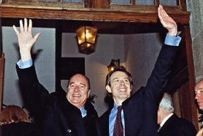
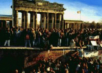

This lesson provides an overview of the historical and geopolitical context within which the European Security and Defence Policy (ESDP) was launched. It discusses NATO's changing role in the post-Cold War era, developments within the European Union (EU), such as the creation of the EU's Common Foreign and Security Policy (CFSP), and in particular the British-French St Malo Declaration, which proved to be the diplomatic turning point in the creation of ESDP.
In this lesson, you will learn about the history and political context within which the development of ESDP took place. You will learn about the most important political and diplomatic events that led to the creation of ESDP and the main reasons why European policy makers decided to establish ESDP.
A routine British-French summit was held in the northern French port of St Malo on 3-4 December 1998. This summit was to be a turning point in the public diplomacy that led to the creation of the European Security and Defence Policy (ESDP).
 The French team was led by Conservative President Jacques Chirac (left), who had been president of France since 1995. Chirac's counterpart was British Labour Party leader and Prime Minister Tony Blair.
Blair was elected in 1997 after a campaign that promised that the United Kingdom would position itself at the centre of Europe, while keeping its core commitment to the North Atlantic Treaty Organisation (NATO). France and the United Kingdom were both founder members of NATO, but France left the military command structure in 1966. France and the United Kingdom were considered the two leading military powers in Europe, and both were major NATO and European Union (EU) members. It was therefore safe to assume that no major changes to military security or to the provision of defence by European institutions would come about unless they both agreed.
The St Malo Declaration stated that the EU should acquire the "capacity for autonomous action, backed up by credible military forces, the means to decide to use them, and a readiness to do so, in order to respond to international crises". However, such a commitment should not challenge the role of NATO: EU countries should act "in conformity with the respective obligations in NATO".
Before continuing, please read the St Malo Declaration, and then answer the question.

- British Motives
- During the post-World War II period, an important foreign policy concern of the United Kingdom had been to maintain and strengthen the transatlantic link between Europe and the US: The United Kingdom saw itself as a bridge-builder between the two continents. However, the security system changed fundamentally after the Cold War. After the bloodshed in the Balkans, the British government realised that the EU must take on more responsibility for security and defence. Further, Tony Blair's election as prime minister marked a fundamental shift in the United Kingdom's approach to Europe. Blair favoured a policy of constructive engagement within European institutions. And in the field of security and defence, the United Kingdom could offer both credibility and leadership.
- French Motives
- Like the United Kingdom, France was convinced that after the Cold War domestic stability and integration into the EU no longer sufficed to ensure security in Europe. Moreover, a core objective of French foreign and security policy had long been to create a (relatively) autonomous European security and defence policy to counterbalance the US and complement NATO. France also hoped that such a policy would lead to a more balanced transatlantic partnership.
- The US Reaction
- On the other side of the Atlantic, the St Malo Declaration was met with a certain amount of scepticism. High-level US policy makers, including then-US secretary of state Madeleine Albright, publicly expressed their concern about Blair and Chirac's initiative, which they thought might drive a wedge between the US and Europe, undermine NATO, and lead to unnecessary duplications in security policy issues. Many in Europe, aware of US unease, were concerned that the creation of an autonomous European defence capacity would lead the US to lose interest in the continent's security problems.
While the St Malo Declaration marked a cornerstone in the development of a genuinely European security and defence policy, the declaration has to be viewed in a geopolitical context that includes the fall of the Berlin Wall and the changing roles of NATO and the EU in the post-Cold War world.
 After 1989, with the fall of the Berlin Wall, the end of the Soviet empire in Europe, and the collapse of the Soviet Union, the international system changed fundamentally. Many hoped that the fear of an all-out war between the two main protagonists (the US and the Soviet Union) was past. Germany and Europe could be united. Liberal democracy and capitalism could spread, energised by the technological revolution and globalisation. There would be a peace dividend, and defence budgets would decrease.
However, the post-Cold War era developed in rather different ways. Nationalism, ethnic tensions, and conflicts within states spread. Western powers, along with a broad "coalition of the willing", were still able to act effectively together against Saddam Hussein after his invasion of Kuwait. In the Balkan region, however, violent conflict erupted, and for some time neither the Americans nor the Europeans were willing to deal with armed conflict on the borders of the Euro-Atlantic area.
In the following section, we examine NATO's changing role after the Cold War. We then turn to the efforts of the EU to establish a common foreign and security policy.
NATO's task as a defence alliance appeared complete, once the Soviet empire and then the Soviet Union disintegrated. But during the 1990s, NATO was busy transforming itself. New bodies were created to ensure the loyalty of emerging states: The North Atlantic Cooperation Council (NACC), later called the Euro-Atlantic Partnership Council (EAPC), and the Partnership for Peace (PfP) were the most important, and the NATO-Russia Council the most obvious, evidence of the new world. At the 1997 NATO summit, the decision was taken to enlarge NATO. France began talks that could have meant its reintegration into the military command structure, and Spain joined NATO's military command structure.
NATO's mission was also transformed, and NATO was adapted to match the new strategic environment in which the old Soviet threat had vanished but in which many new threats and challenges had appeared. NATO's operational framework had to be changed, so NATO could deploy flexibly and effectively. In 1994, and then in 1995, NATO warplanes took to the air for the first time in the alliance's history — not in defence of territorial integrity but to try and contain the bloodshed in the Balkans. The European Security and Defence Identity (ESDI) was set up, in which the Europeans were to be given a greater role and more responsibility in providing their own security in the new NATO. Combined Joint Task Forces (CJTFs) were established, and NATO planning mechanisms were re-examined.
During the Cold War, the European Community had no military tools at its disposal. Individual states had their own military forces, and NATO provided a defence alliance for most European Community states. The European Community was thus a "nested security community". This transatlantic bargain was widely accepted during the era of Soviet threat, although it was always clear that the bargain implied that the key institution for Western defence was the US-led NATO, and not the European Community. The bargain entailed costs, too: financial costs for the US defence budget, troop commitments in Europe, and uneven burden sharing between the two sides of the Atlantic.
In 1991, at the European Community summit in Maastricht, European leaders decided to create the Common Foreign and Security Policy (CFSP) out of a much vaguer mechanism for European foreign policy coordination (European Political Cooperation). With the Treaty on European Union, which was adopted at Maastricht, the European Union (EU) was established, and its institutional structure was set up. The structure consists of three pillars: The first comprises the European Communities, the second consists of CFSP, and the third covers justice and home affairs. The creation of CFSP (as the EU's second pillar) meant that EU member states could decide jointly on common foreign policy actions. Some European states already had additional protection from the Western European Union (WEU), although this institution had no military tools and seems to have been in decline almost since its foundation. So at Maastricht, European Community leaders decided that the WEU was to be an integral part of the development of the EU; the WEU's role was to elaborate and implement EU decisions and actions that have defence implications. Six years later in Amsterdam, EU heads of state and government supported the idea that the EU foster closer institutional relations with the WEU with a view to the integration of the WEU into the EU, should the European Council so decide. The heads of state and government also provided the EU with access to an operational capability, and the Petersberg tasks were incorporated into the Treaty of Amsterdam.
Before continuing, please answer the questions below.
The St Malo Declaration resulted from the recognition that the various efforts made in the 1990s to strengthen the WEU would not provide effective and credible military security for the new challenges the Europeans faced that were not existential threats to territories. The WEU was not given enough authority to allow it to execute its new mandate. Moreover, the EU had failed as a foreign policy actor in the Balkans, when war there persisted and spread. NATO, too, had been reluctant to act; it did not become involved in the Balkans until 1994-95, when the US decided to act. Further, it was unclear whether the US, through NATO, should continue to play the leading role in preventing conflicts on European soil once the Cold War was over.
The St Malo Declaration was the diplomatic turning point in the creation of a European security and defence policy; at the June 1999 EU summit in Cologne, Germany, the EU as a whole embraced the goals set forth at St Malo. The joint declaration adopted by EU leaders at the Cologne summit was very much in line with the St Malo Declaration. Like the St Malo Declaration, the Cologne Declaration stated that the EU should acquire the necessary means and capacities to engage in EU-led crisis management operations. It also made clear that the EU's efforts in this area should not challenge the role of NATO as the basis of collective defence of all NATO members. With the Nice Treaty, concluded by EU countries in 2000, ESDP was given a formal basis and was thus brought into the EU's institutional structure.
Before continuing, please answer the following question.
During the Cold War, the European Community had no autonomous military capacity, and for its security it was entirely dependent on NATO. While attempts were made to strengthen the WEU in the 1990s, it became clear by the end of the decade that the WEU would not be allowed to grow into an effective security policy mechanism. The rise of nationalism and ethnic tensions on the borders of the EU and the EU's failure to prevent the wars in the Balkans led many Europeans to believe that the EU should be able to deal with crises in its neighbourhood, in particular when NATO was not involved. With the St Malo Declaration, the United Kingdom and France gave the EU the foundation for developing a capacity for autonomous military action and thus for addressing Europe's shortcomings as a security actor, without, however, challenging NATO's role. At subsequent EU summits, this objective was accepted by all EU countries, and ESDP was incorporated into the EU's formal structure.
- Maastricht Treaty, 1992
- Treaty on European Union and creation of the EU's Common Foreign and Security Policy (CFSP). The treaty stipulates that the WEU is an integral part of the development of the EU.
- Treaty of Amsterdam, 1997
- The Petersberg tasks are incorporated into the treaty.
- British-French Joint Declaration on European Defence, St Malo, 1998
- The declaration states that the EU must have the capacity for autonomous action, backed up by credible military forces, the means to decide to use these forces, and a readiness to do so in order to respond to international crises.
- Cologne European Council Meeting, 1999
- The objectives of St Malo are adopted by the European Council.
- Treaty of Nice, 2000
- ESDP is incorporated into the EU's institutional structure.
You have completed this learning object.
You have completed this learning object.
Please click on the button to close this window.